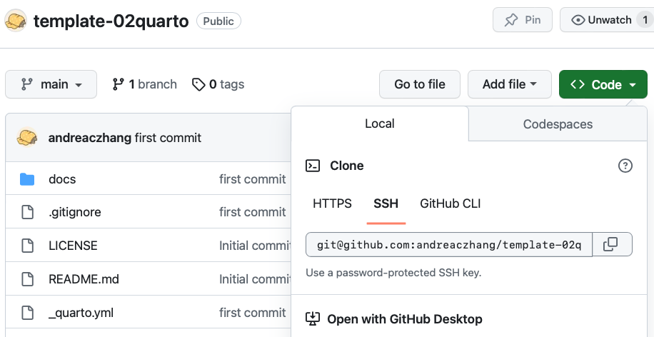
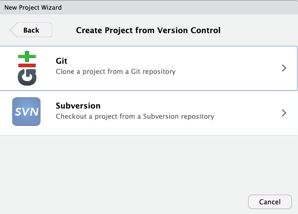
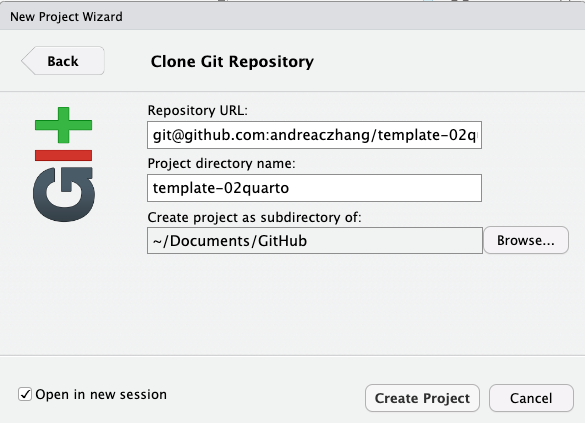
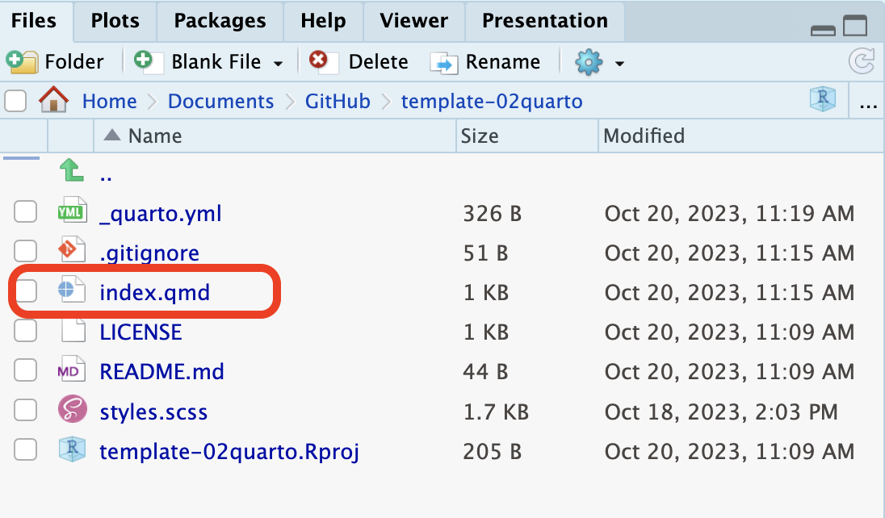
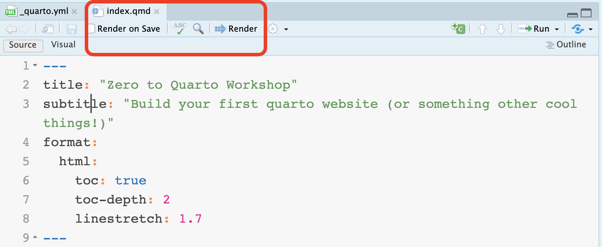
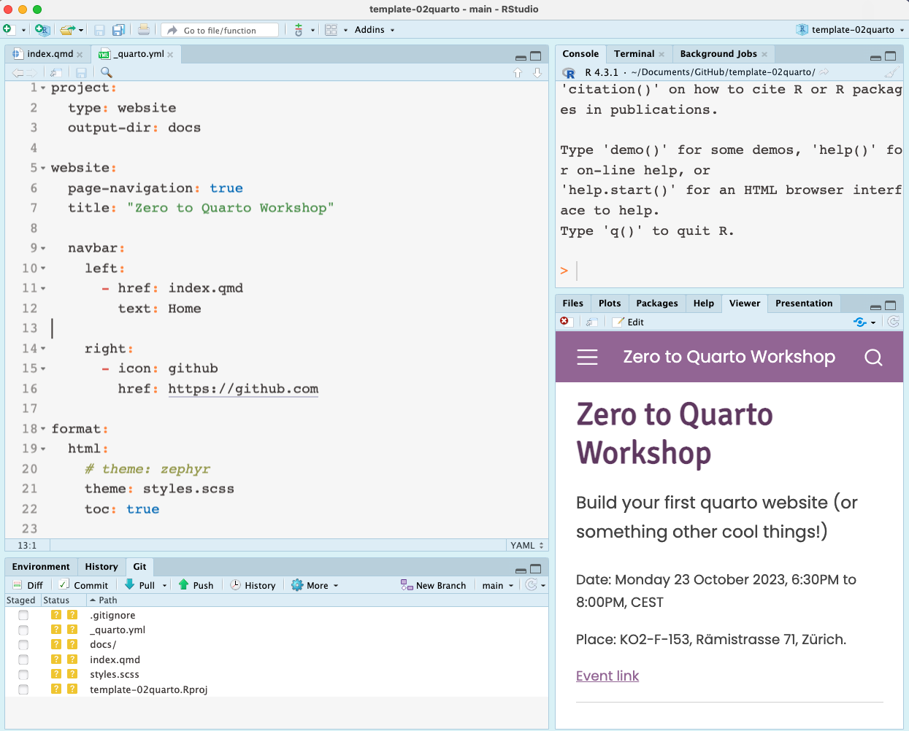
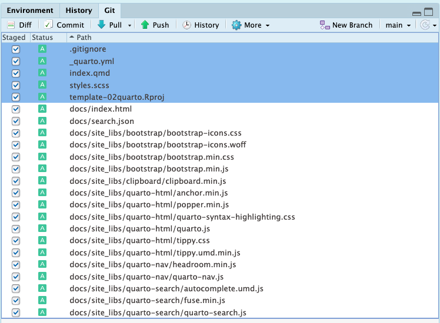
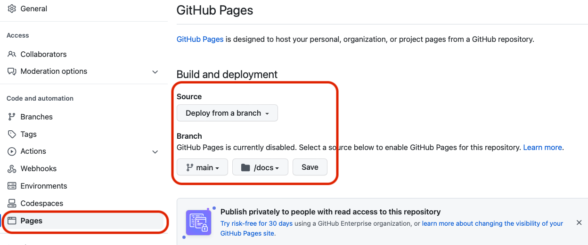
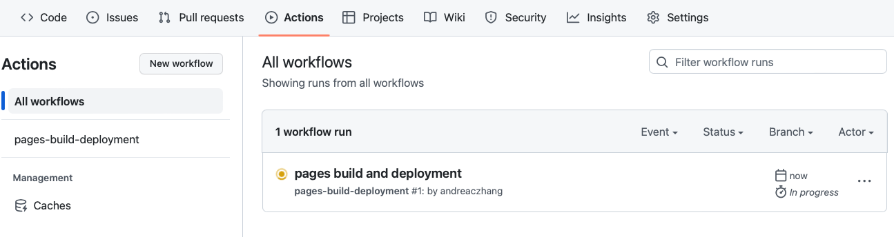
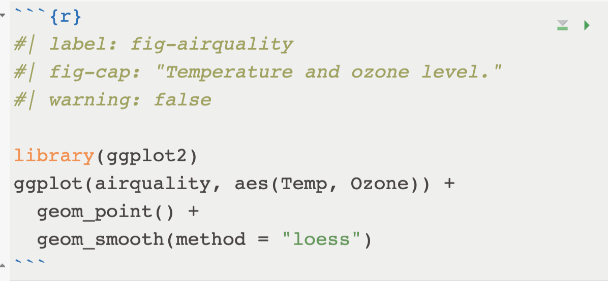

library(ggplot2)
ggplot(airquality, aes(Temp, Ozone)) +
geom_point() +
geom_smooth(method = "loess")
This tutorial outlines a minimal workflow so that you can build your own quarto website. For a more complete guide, please refer to the official quarto documentation.
You can find the workshop material from the GitHub repository of R-Ladies Zürich.
The source repository and slides can be found in Chi’s personal GitHub repositories.
There are a few ways to do this.
Go to the template-02quarto repository available on R-Ladies Zurich repository.

Fork the repository (so that you have your own copy).
Then, clone the repository by clicking on Code, copy the link;
In RStudio, create a new project, choose Version Control:

Paste the link, and enter a name for your project. Create. This step copies content to your local machine, and inside your Rstudio you should see a tab named Git.

This option is for those who are familiar with using GitHub and version controlled R project, and want to make a quarto website from scratch. (You are welcome to download the files directly from the template repo into your own!)
This will create an empty version controlled Rproject. After this, you can choose to download the files from the template repository directly; or create your own quarto files.
You can try to modify the README.md locally, then commit and push to remote (online repository). Refresh the webpage, if you see the remote repository is synced, that means the version control works fine.
Now you see a few files that have been downloaded in the folder where you Rproject is located. Before going into more details, let’s build your first webpage to see what happens!
Locate index.qmd, open it.

You should have a button render when you open the index.qmd file. Click on render. Do you see an HTML page in the Viewer panel?
If you do, that’s great! We’re ready for the next step!

Let’s understand what makes a minimal quarto website. These are the three most important files that you downloaded from the template repository:
_quarto.yml stores the meta-data for the website, such as structure, layout and other information;index.qmd is your homepage;styles.scss provides a customized appearance of the website.You’ve also downloaded .gitignore and a LICENSE. They are important, but not essential when building a website per se.
Strictly speaking, you do not need a style.css/style.scss to build a minimal quarto website. Quarto will use a default cosmo style when you don’t specify anything. We’ll see how to modify the theme in a few moments.

To prepare for publishing the website with GitHub Pages, we need to do a few things in the quarto project before pushing all the files to GitHub.
In addition to GitHub Pages, there are also other ways to publish the website. Feel free to explore!
In _quarto.yml, change (or double check that) the project configuration to use docs as the output-dir:
project:
type: website
output-dir: docsWhat this does is that when you click render, the built website with all the HTML files will be placed and updated in the docs folder. This step is essential when we configure GH pages setting to deploy from docs folder.
In the _quarto.yml you downloaded from the workshop template, it already specified the output-dir: doc.
When you build a website from scratch, by default, this is usually not the case. You’d need to add this line yourself.
Add .nojekyll to the root of the repository: it is same location where _quarto.yml is.
You can do this by (in Terminal)
touch .nojekyllIf you don’t have Terminal panel next to Console, it can be opened by Tools > Terminal > New terminal.
Alternatively, you can also use your favorite command line software to navigate to the project and add .nojekyll there.
Finally, commit all the files, and push everything to your remote repository on GitHub repository.

When you are more experienced, you can add more content until you’re happy before configuring the GH pages and test the website deployment. Yes, you can swap step 3 and 4 in this tutorial.
I personally prefer to test the deployment early on to make sure it works!
On GitHub: go to Settings > Pages > Build and deployment, publish from docs of the main branch. Save.

This should take less than 1 minute. Meanwhile, you can click around and check GitHub Action and deployment status.


After the deployment is successful, go to view deployment, and a successful website should be published.
A URL should appear to tell you where the website is: it usually takes the form of https://your_username.github.io/your_reponame/
It is good practice to save it on the page where your repository is located, to the top right. This way you can find it easily in the future!
Now this is really where you can be creative. There are so many things you can change; but let’s focus on some basics first.
The appearance of the workshop template is inspired by the R Ladies colors. If you want to use a preset provided by quarto, it is perfectly fine - they look nice and professional already.
To modify themes, in _quarto.yml, instead of providing styles.scss file, use the theme name you prefer: cosmo, zephyr are good places to start.
For more themes, check here.
format:
html:
theme: cosmoAlternatively, feel free to modify the styles.scss to test different color palettes and font styles. Go wild!
Quarto has provided some guide on how to make custom themes. However, the easiest way to get started is to find an existing style you like, and try to modify it.
It is straightforward to include images in the website. One way to include a local figure in an article (such as blogpost) goes like this:
 {width=85% fig-align="center"}To make a simple table, you can directly enter the table in the quarto document:
| Default | Left | Right | Center |
|---------|:-----|------:|:------:|
| 12 | 12 | 12 | 12 |
| 123 | 123 | 123 | 123 |
: Table name| Default | Left | Right | Center |
|---|---|---|---|
| 12 | 12 | 12 | 12 |
| 123 | 123 | 123 | 123 |
Use a code fence (3 backticks) with the language you wish to run the code:

library(ggplot2)
ggplot(airquality, aes(Temp, Ozone)) +
geom_point() +
geom_smooth(method = "loess")
Depending on your needs, you may want to hide the code and/or not execute the code. Learn how to work on code in this chapter of the quarto doc.
The latest quarto version and extension supports running R scripts interactively from a web-browser: i.e. no local execution of the R code.
I have a blogpost on this topic, read here. However, be aware that this technology is yet to be improved, so what you know today about webr might not work next month…
Today we went through 4 steps:
output-dir and .nojekyll)It takes a few try to make a website that you need. But this is a good start! One day you will make your own portfolio, or a course website that truly belongs to you!
Quarto Gallery shows a nice and inspiring collection of the types of projects you can create. Make sure you check them out!